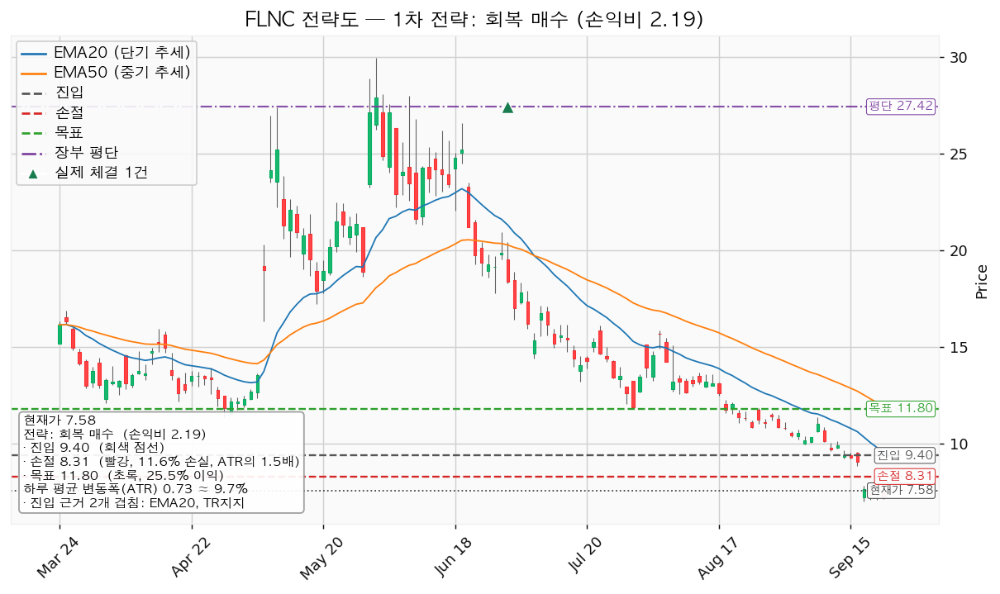
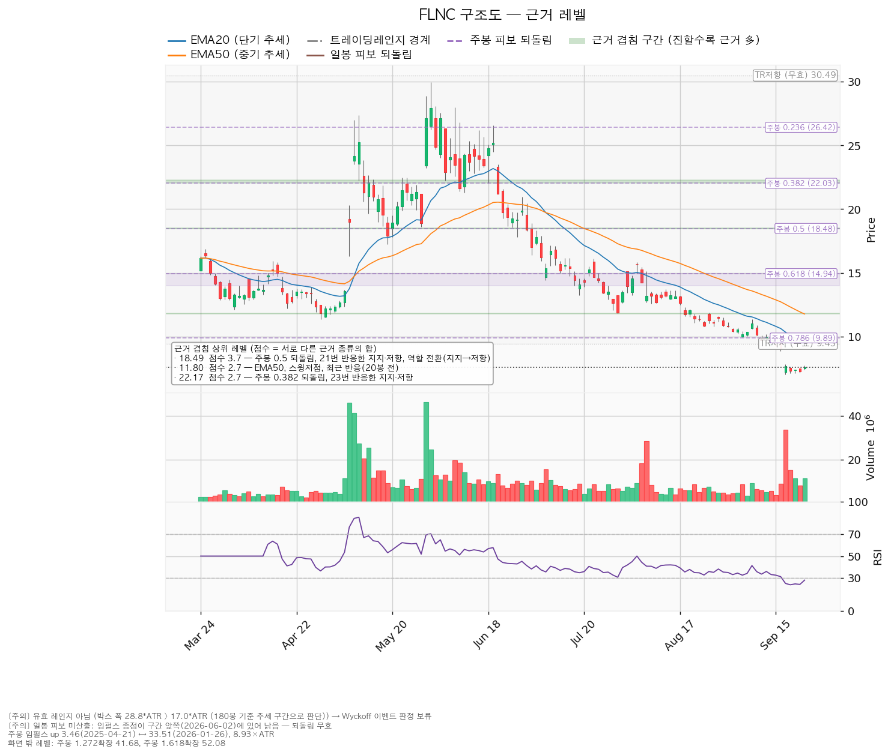
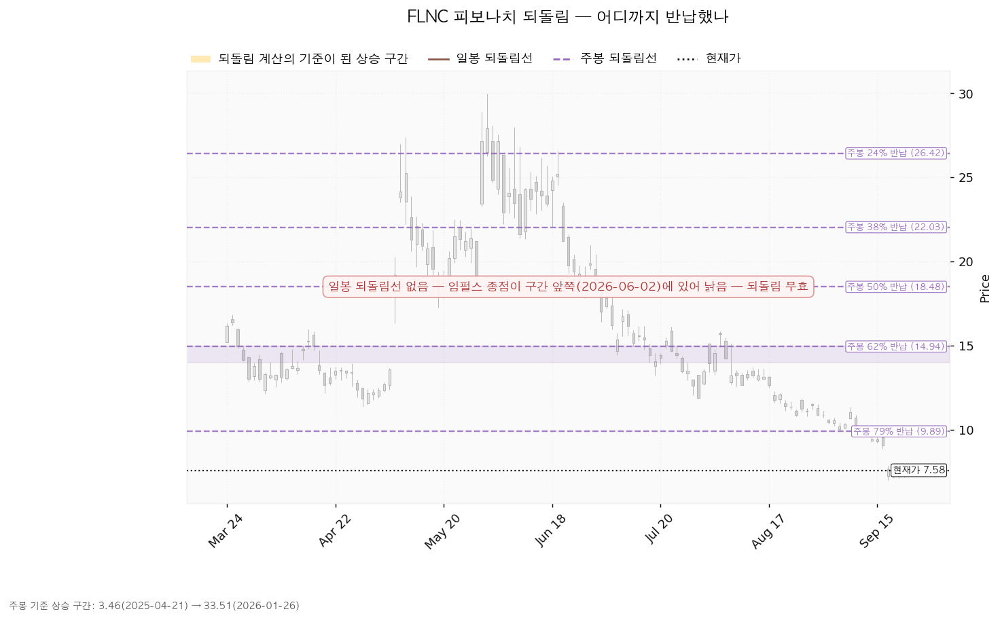
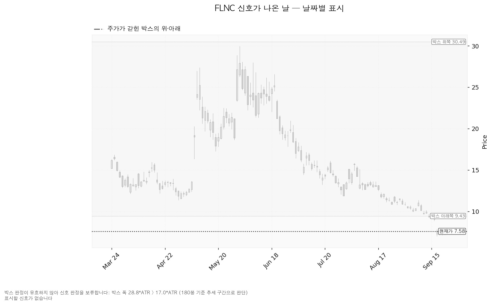

플루언스 에너지(FLNC)는 전력망·발전소에 들어가는 대형 배터리 에너지저장장치(ESS)와 이를 운영·입찰하는 소프트웨어, 유지보수 서비스를 공급하는 미국 기업입니다. AES와 지멘스가 함께 세웠습니다.
| 구분 | 가격 | 판정 방식 | 현재가 대비 | 상태 |
|---|---|---|---|---|
| 회복선(진입 조건) | 9.40달러 | 일봉 종가로 회복하면 진입 | +24.01% (2.49배) | 회복 대기 |
| 집행 손절 | 8.31달러 | 도달 시 즉시 전량 청산 — 9.40달러 회복 후 진입한 경우에만 유효하며, 미진입 상태에서는 아무 의미가 없습니다 | +9.63% (1.00배, 현재가 위) | 미진입 시 무의미 |
| 관망 종료 기준 | 7.00달러 | 일봉 종가가 아래로 마감 / 또는 2026-11-24 실적 | -7.65% (0.79배) | 유효 — 9월 17일 저가 7.01달러가 이 자리 |
| 확인선 | 18.49달러 | 일봉 종가 돌파 후 되돌림에서 지지 확인 | +143.93% (14.91배) | 미돌파 |
| 폐기선(구조) | 9.40달러 | 이탈 후 3거래일 내 종가 회복 실패(또는 그 전에 8.67달러 아래 종가 마감) + 반등에서 저항으로 확인 | +24.01% (2.49배, 현재가 위) | 이탈 상태 — 2단계 경고 확정 |
기준은 9월 23일 종가 7.58달러, 하루 평균 변동폭(ATR) 0.73달러입니다. 폐기선과 회복선이 같은 9.40달러입니다. 같은 가격을 위아래 두 방향으로 읽은 것이며, 종가로 넘으면 진입이고 그 아래에 머무는 동안은 시나리오가 깨진 상태입니다. 가격이 이미 24.01% 아래에 있어 폐기선으로는 새로 판정할 것이 없고, 미진입자가 매일 볼 선은 관망 종료 기준 7.00달러입니다. 확인선 18.49달러는 실행 기준이 아니라 상승 전환이 완성됐다고 인정할 먼 지점이고, 박스 상단 30.49달러는 그 위의 맥락입니다. 유효한 박스로 판정되지 않았으므로 회복선·확인선은 박스 경계가 아니라 참고용 구조선입니다.
① 직전이 건 조건의 성적표 — 한 세션이 지났고 걸린 조건은 하나도 충족되지 않았습니다. 9월 23일 종가 7.58달러로 회복선 9.50달러는 미충족, 관망 종료 기준 7.00달러도 미충족(저가 7.3857달러)입니다. 폐기선 9.50달러는 계속 그 아래에서 마감해 이탈 상태가 유지됐습니다. 집행 손절 8.37달러는 진입이 없었으므로 작동하지 않았습니다. 보유 270주 전량 정리 지시는 또 집행되지 않았습니다 — 체결 장부에는 2026년 7월 1일 매수 1건, 270주만 있습니다. 이번 지연은 7.27달러에서 7.58달러로 오르는 구간이라 +84달러 이득이었습니다.
② 좌표의 이동 — 전부 조금씩 내려왔고 손익비만 올라왔습니다. 진입 9.50 → 9.40달러(EMA20이 9.56 → 9.37달러로 내려와 180거래일 구간 지지 9.43달러와 만난 9.37~9.43달러 묶음), 손절 8.37 → 8.31달러(진입선에서 변동폭 1.5배 아래라는 계산은 같고 진입선을 따라 내려감), 목표 11.89 → 11.80달러(EMA50이 11.93 → 11.77달러로 내려오며 겹침대가 11.77~11.84달러로 이동), 손익비 1:2.11 → 1:2.19. 관망 종료 기준은 7.00달러로 같고, 확인선은 18.53 → 18.49달러로 밴드 중심만 이동했습니다. ATR 0.75 → 0.73달러, RSI 24.0 → 28.0입니다.
③ 판단은 직전과 같습니다. 보유 270주 정리, 신규는 9.40달러 종가 회복 시 조건부 진입입니다. 하루 반등으로 조건 점검 3/9와 미달 여섯 항목이 그대로이고, 컨센서스 평균 목표도 10.11 → 10.11달러로 같습니다. 직전 리포트에서 정정할 오류는 없습니다.
산출된 셋업은 회복 확인 매수 한 개입니다. 국면이 하락·중립이라 되돌림 매수·돌파 매수는 나오지 않았고, 지지 확인 매수도 나오지 않았습니다 — 유효한 박스가 없고 박스 안쪽 판정이 매집 우위가 아닌 중립이기 때문입니다. 셋업이 하나뿐이라 대표 선정의 트레이드오프는 없고, 상대강도·거래량으로 순위에 0.9배가 곱해졌지만 비교 대상이 없어 대표 셋업을 바꾸지 않았습니다. 선정 사유: *"손익비 2.19 × 구조 증명도(회복 확인형) × 근거 겹침 2.2점으로 선정. 저항을 종가로 회복한 뒤에만 진입한다 — 진입가는 불리하나 구조가 먼저 증명된다."*
| 항목 | 값 |
|---|---|
| 셋업 / 구조 증명도 | 회복 확인 매수 — 회복 확인형(증명도 1.0, 가장 높은 등급) |
| 엣지의 종류와 성격 | 모멘텀 — "저항을 종가로 되찾으면 그 방향이 이어진다"는 전제. 자주 틀리고 소수가 크게 맞는 유형이라 승률을 기대하는 셋업이 아닙니다(이 유형의 일반적 성격이며, 이 엔진에서 측정한 값이 아닙니다) |
| 진입 | 9.40달러 — 일봉 종가로 회복한 뒤 (현재가에서 +24.01%, 2.49배 위). 진입 근거 겹침 2.2점 / 9.37~9.43달러 — 근거 2종: EMA20, 180거래일 구간 지지 |
| 손절 | 8.31달러 — 손절 폭 1.09달러 = 하루 평균 변동폭의 1.50배(진입가 대비 -11.60%). 진입 기준선에서 변동폭 1.5배 아래이며, 진입가 아래에 근거가 겹치는 구간이 없어 구간 하단이 아니라 변동폭 기준으로 잡았습니다 |
| 목표 | 11.80달러 (진입 대비 +25.53%). 목표 근거 겹침 2.7점 / 11.77~11.84달러 — EMA50, 스윙저점(7월 29일 11.84달러), 20거래일 전 반응 |
| 손익비 | 1:2.19 (손절 폭 1.50 ATR) — 이 손절이 이미 구조적 손절(변동폭 1.5배)이므로 구조적 손절 기준 손익비도 같은 1:2.19입니다. 손절을 조여서 만든 숫자가 아닙니다 |
| 청산 규칙 | 11.80달러에서 936주 전량 청산, 트레일링은 걸지 않습니다 |
| 비중 | 936주 · 8,798달러 · 계좌의 8.62%(1회 매매 손실 한도 1% 기준, 한 종목 상한 13% 이내) |
엔진은 중간 목표를 함께 냈습니다 — T1 9.89달러에서 절반 익절(손익비 0.44), 잔여분 손절을 진입가 9.40달러로 올린 뒤 T2 11.80달러에서 나머지 절반. 이 경우 전 구간 손익비는 1:1.31, T1 체결 후 본전 손절에 걸리면 하한은 1:0.22입니다. 이 리포트의 집행은 고정 정책대로 단일 청산이며, 절반을 손익비 0.44에서 던지면 전 구간 손익비가 2.19에서 1.31로 내려가기 때문입니다. 9.89달러(주봉 0.786 되돌림 + 13거래일 전 반응)는 가는 길에 한 번 막힐 수 있는 가격으로만 읽습니다. 진입에서 목표까지 2.40달러는 하루 평균 변동폭의 3.28배입니다. 진입 근거는 모멘텀이지만 집행은 구간 규칙을 따릅니다 — 11.80달러에서 전량 청산하고, 그 위로 확정되는 구간은 이 포지션의 연장이 아니라 새 셋업으로 다시 잡습니다. 확인선 18.49달러와 목표 11.80달러는 다른 가격이라 분기 문제가 없습니다. 계획 진입가 9.40달러는 전략도에 그려진 장부 평단 27.4219달러보다 아래이지만, 270주를 먼저 정리한 뒤의 매수이므로 평단을 낮추는 물타기가 아니라 새 포지션입니다.

| 단계 | 조건 | 의미 | 행동 |
|---|---|---|---|
| ① 관찰 | 일봉 종가가 9.40달러 아래로 마감 | 구조 이탈이 시작된 것이며, 되돌아 올라오면 속임수 하락일 수 있어 아직 무효가 아닙니다 | 신규 진입만 중단. 집행 손절은 그대로 둡니다 |
| ② 경고 | 이탈 후 3거래일 안에 9.40달러를 종가로 회복하지 못함, 또는 그 전에 일봉 종가가 8.67달러 아래로 마감(하루 평균 변동폭의 1배만큼 더 밀림) — 둘 중 먼저 오는 쪽 | 저항 회복 실패 가능성이 우세해집니다 | 잔여 비중 축소. 반등이 나오면 이 가격에서의 반응을 확인합니다 |
| ③ 무효 | 반등이 9.40달러에서 막히고 그 아래로 되밀림(지지가 저항으로 전환) | 셋업 폐기 — 구조 해석이 틀린 것으로 확정 | 포지션 정리 후 새 구조가 만들어질 때까지 관망 |
현재 위치는 ② 경고 확정입니다. 9월 16일 종가 9.05달러로 9.40달러 아래에 들어섰고, 그 뒤 3거래일 동안 회복하지 못했으며, 9월 17일 종가 7.66달러는 8.67달러 아래입니다. ③은 반등이 나와 9.40달러에서 막힐 때 확정되며, 가격이 2.49배 아래에 있어 당분간 판정할 기회가 오지 않습니다. 집행 손절 8.31달러는 이 3단계 판정과 무관하게 별도로 작동하고, 장중 일시 이탈은 어느 단계에도 해당하지 않습니다. 폐기선 9.40달러가 현재가 위에 있어 아래쪽 무효화 기준으로는 판정할 수 없으므로, 논지 무효화는 가격이 아닌 조건으로 겁니다 — 11월 24일 실적에서 ① 영업활동 현금흐름 적자가 -1억 4,554만 달러보다 깊어지거나 ② 내년 추정 EPS가 추정 범위 하단 -0.93달러 쪽으로 더 내려가면, 평균 목표 10.11달러를 떠받치던 근거가 사라지므로 이 종목을 후보에서 뺍니다.
① 상승 전환 — 9.40달러를 종가로 되찾고 지지된 뒤 18.49달러를 종가로 돌파. 9월 17일 저가 7.01달러가 속임수 하락으로 확인되고 강세 신호 → 되돌림 지지 → 상승 국면으로 이어지는 순서입니다. 행동: 9.40달러 종가 회복이 나오면 936주 진입, 손절 8.31달러, 11.80달러에서 전량 청산. 18.49달러 돌파 구간은 새 셋업으로 잡습니다.
② 횡보 지속 — 7.00달러를 지키며 9.40달러 아래에서 옆으로 움직임. 아래쪽 가격을 더 내주지 않은 채 매물 소화에 시간을 쓰는 국면이며, 그 자체로 부정적인 신호가 아닙니다. 6월 고점 29.97달러에서 7.01달러까지 밀린 뒤이므로 손바뀜에 시간이 걸리는 것은 자연스럽습니다. 행동: 신규 진입을 보류하고 세 가지를 추적합니다 — 지지 테스트마다 매도 거래량이 줄어드는지, 저점이 절상으로 돌아서는지, 오를 때 거래량과 캔들 폭이 커지는지. 현재 관측치: 지지 테스트 거래량 증가, 저점 절하, 상승봉/하락봉 거래량비 1.15.
③ 시나리오 폐기 — 이탈 후 3거래일 내 회복 실패(충족)와 8.67달러 아래 종가 마감(충족)에 이어, 반등이 9.40달러에서 막힐 때. 매집이 아니라 재분산이었다는 뜻이며 추가 저점 갱신 가능성이 열립니다. 행동: 270주는 이 리포트에서 이미 정리하고, 아래로는 라운드피겨 7.00달러(-7.65%)·6.50달러(-14.25%)·6.00달러(-20.84%)만 남습니다.
| 가격대 | 겹침 점수 | 근거 | 현재가 대비 |
|---|---|---|---|
| 18.49달러 | 3.7 | 주봉 0.5 되돌림 + 21번 반응한 지지·저항 + 역할 전환(지지→저항) | +143.93% (확인선) |
| 11.77~11.84달러 | 2.7 | EMA50 + 스윙저점 + 최근 반응(20거래일 전) | +55.67% (목표 11.80달러) |
| 9.37~9.43달러 | 2.2 | EMA20 + 180거래일 구간 지지 | +24.01% (진입·폐기선) |
| 9.89달러 | 2.0 | 주봉 0.786 되돌림 + 최근 반응(13거래일 전) | +30.47% (엔진 중간 목표·단기 회복선) |
| 7.00달러 | 1.1 | 라운드피겨 + 최근 반응(4거래일 전) | -7.65% (관망 종료 기준) |
| 6.50 / 6.00달러 | 각 0.6 | 라운드피겨 | -14.25% / -20.84% |
점수는 서로 다른 근거의 종류가 몇 개 겹쳤는지를 가중합한 값이며, 같은 종류가 여러 개 붙어도 한 번만 셉니다. 현재가 아래로는 7.00달러 하나만 근거다운 근거이고, 그 아래는 라운드피겨뿐입니다. 7.00달러는 라운드피겨에 9월 17일 저가 7.01달러의 반응이 더해져 1.1점이며, 6.50·6.00달러는 0.6점짜리입니다. 이것이 270주를 정리하는 이유이자, 집행 손절 8.31달러를 겹침 구간 하단이 아니라 변동폭 기준으로 잡은 이유입니다. 거래량 강도 4.09배는 9월 17일 급락 때 실린 물량입니다. 이 셋업은 저항을 종가로 되찾을 때 사는 유형이라 거래량이 평균보다 실려 있는 편이 정상이고, 그래서 조건 점검에서 이 항목은 미달이 아닙니다.
박스 판정은 보류합니다. 40·90·180거래일 세 창을 모두 시험했지만 어느 것도 박스 조건을 채우지 못했습니다(조회한 전체 일봉 752개). 가장 잘 지킨 180거래일 창은 가격이 92.8% 안에 머물렀지만 폭이 하루 변동폭의 28.78배로 기준 17배를 넘어, 옆으로 누운 박스가 아니라 아래로 흐른 추세 구간으로 읽습니다. 40거래일 창은 반대로 머문 비율이 67.5%뿐이고 방향성 지표가 1.156으로 커서 짧은 창에서도 한 방향으로 흐른 구간입니다. 그래서 매집·분산을 가르는 Wyckoff 국면 판정이 없고, 국면 후보는 하락 진행이며 이동평균 배열만 반영한 값입니다. 직전 구간은 4.31~24.79달러의 추세·확장 구간이며 같은 가격대의 연장으로 해석됩니다. 안쪽 관측치는 중립이고, 그 사유는 지지 테스트마다 매도 거래량이 늘고(4월 7일 1.23배 → 4월 20일 1.42배 → 4월 29일 1.08배 → 7월 29일 0.86배 → 9월 17일 4.59배) 저점이 절하 판정이라는 것입니다(7월 29일 11.84달러, 8월 7일 12.57달러에 이어 9월 17일 7.01달러). 상승봉 대 하락봉 거래량비 1.15는 미세하게 매수 쪽이지만 이 둘을 상쇄할 숫자가 아닙니다.

되돌림은 주봉만 씁니다. 일봉 되돌림은 기준이 될 상승 구간의 종점이 6월 2일로 낡아 이번에도 계산되지 않았습니다. 주봉은 3.46달러(2025-04-21) → 33.51달러(2026-01-26) 상승 구간 기준이며, 79% 반납선 9.89달러가 마지막 되돌림선이고 현재가 7.58달러는 그 아래입니다. 그 아래로 남은 되돌림선이 없어 다음 참조점은 상승이 시작된 3.46달러입니다.

날짜별 신호는 이번에도 없습니다. 유효한 박스로 판정되지 않아 Wyckoff 이벤트(속임수 하락·상단 속임수·강세 신호·약세 신호)가 계산되지 않았습니다. 신호가 없는 것이 아니라 판정을 보류한 것이며, 9월 17일의 4.59배 거래량도 여기서는 이름이 붙지 않고 지지 테스트 기록으로만 남습니다.

애널리스트 19명, 투자의견 보유(hold), 다음 실적 2026-11-24입니다. 후행 PER은 후행 EPS가 -0.60달러로 적자여서 존재하지 않고, 선행 PER은 -28.5배로 음수입니다. 적자 기업의 음수 배수는 비싸다·싸다를 가르는 값이 아니므로 밸류에이션 판단에 쓰지 않습니다. 이익 성장률로 보면 내년 추정 EPS -0.27달러는 올해 -0.89달러보다 적자 폭이 +70.1% 줄어드는 것이며, 흑자 전환은 아닙니다. 목표주가는 평균 10.11달러 / 최저 3.00달러 / 최고 23.00달러로 벌어져 있고, 현재가 7.58달러는 최저 목표보다 +152.7% 위여서 19명 전원의 목표 아래로 떨어진 상태는 아니지만 분포 아래쪽에 있습니다. 평균 목표는 직전 조회와 같은 10.11달러입니다.
하락의 성격 — 사업 전망 하향입니다(가격만 빠진 배수 수축이 아닙니다). 내년 추정 EPS는 90일 전 +0.20달러에서 -232.1% 변해 -0.27달러가 됐고, 30일 전 +0.30달러 대비로도 -189.9%입니다. 올해 추정 EPS는 90일 +551.3%, 30일 +247.2%로 적자가 깊어졌습니다. 두 기간 모두 같은 방향이므로 하향이 지금도 진행 중이며, 확인 항목은 11월 24일 실적입니다.
현금흐름과 상승 여력. 2025년 9월 30일 결산 기준 영업활동 현금흐름 -1억 4,554만 달러, 잉여현금흐름 -1억 7,534만 달러, 설비투자 2,980만 달러(직전 1,898만 달러 대비 +57.0%)입니다. 설비투자가 앞서서 생긴 적자가 아니라 영업 그 자체에서 현금이 유출되는 유형이며 이쪽이 더 무겁습니다. 결산 기준일이 1년 가까이 지난 값이라 최근 분기는 이 숫자에 없습니다. 평균 목표 10.11달러는 현재가 대비 +33.3%인데 내년 추정 EPS가 적자여서 그 목표가 함의하는 이익 배수를 계산할 수 없고, 어느 분모를 써도 이 거리가 이익 증가로 설명되지 않습니다. 주도주는 아닙니다 — 지수 대비 20일 초과수익 -30.90%, 60일 -65.45%, 120일 -62.95%(가중 -49.28%, 가중치 20일 0.45·60일 0.30·120일 0.25)이고 상대강도선은 60일 신고가가 아니며 20일 기울기도 -30.68%입니다. 컨센서스는 12개월, 이 셋업은 수 주로 시계가 다르며, 이번 리포트의 답은 진입·손절·목표로 냅니다.
| 날짜 | 이벤트 | 볼 것 |
|---|---|---|
| 2026-11-24 | 분기 실적 발표 | ① 올해 EPS 추정 -0.89달러(범위 -1.55~-0.28) 대비 실제치 ② 내년 추정치 -0.27달러가 흑자로 되돌아오는지, 범위 하단 -0.93달러 쪽으로 더 내려가는지 ③ 영업활동 현금흐름이 -1억 4,554만 달러에서 개선되는지 ④ 설비투자 증가(+57.0%)가 매출로 돌아오는 속도 |
날짜가 정해진 확인 이벤트는 이 하나뿐이고, 그 이후 2~3개 분기의 이미 알려진 역풍은 확인할 자료가 없어 적지 않습니다(컨센서스 수치로 추론해 채우지 않습니다).
보유 270주는 지금 전량 정리합니다. 평가액 2,047달러(2,795,615원, 계좌의 2.00%), 평단 27.4219달러 대비 -5,357달러(-72.4%)입니다. 이 지시가 감수하는 비용을 함께 적습니다 — RSI 28.0은 과매도선(30) 아래이고 9월 23일 거래량이 20일 평균의 1.40배로 늘며 +4.26% 올랐으므로, 반등이 며칠 더 이어지는 구간에 파는 결과가 될 수 있습니다. 그럼에도 정리를 먼저 두는 이유는 아래에 받칠 가격이 7.00달러 하나뿐이고, 내년 추정이익 하향이 90일·30일 두 기간 모두 진행 중이기 때문입니다. 신규 진입은 9.40달러 일봉 종가 회복 시 936주(8,798달러 · 계좌의 8.62%)입니다. 손절 8.31달러에서 손실은 1,020달러로 계좌의 1.00%이며, 한 종목 상한 13% 안이고 미결제 리스크 합계는 1.86%에서 2.86%로 올라 한도 6% 안입니다. 다만 AI전력 테마 합계가 14.53%(270주 정리 후 12.53%)에서 21.15%가 되므로, 같은 테마에서 새로 사기 전에는 이 숫자를 먼저 보십시오(한도 35%). 하루 평균 변동폭이 주가의 9.65%로 큽니다. 손절 폭은 그보다 넓은 1.50배(진입가 대비 11.60%)라 논지와 무관한 하루치 흔들림만으로 잘려 나가는 문제는 없습니다. 시계는 수 주입니다. 최종 판정: 보유분 정리 + 신규는 조건 대기, 1:2.19 (손절 폭 1.50 ATR). 조건 점검 3/9이며 미달 여섯(20일선 위·이동평균 정배열·200일선 위·52주 고점 대비·지수 대비 20일 초과수익·상대강도선 신고가)은 전부 추세와 상대강도 항목입니다. 9.40달러 일봉 종가 회복은 그중 20일선 위와 지수 대비 초과수익이 함께 돌아서야 나오는 가격이며, 그래서 이 리포트는 그 종가를 진입 조건으로 겁니다. 미국 지수는 200일 이동평균 위(+7.15%)라 신규 진입을 막는 국면은 아닙니다.
ATR(Average True Range) 하루 평균 변동폭 · EMA20/EMA50 20일·50일 지수이동평균 · RSI(14) 14일 상대강도로 50이 중립이며 30 아래는 과매도 · ESS 대형 배터리 에너지저장장치 · PER 주가수익배수 · EPS 주당순이익 · T1/T2 1차·2차 목표